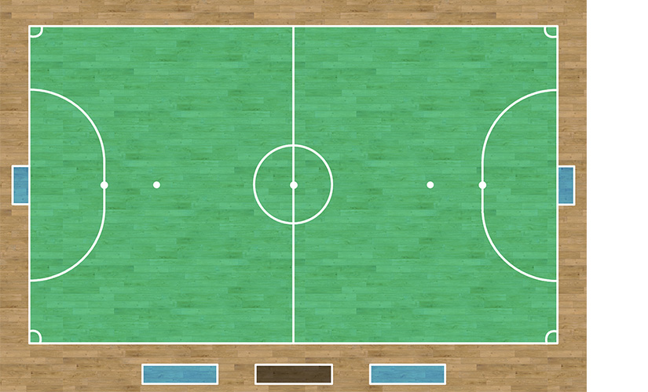
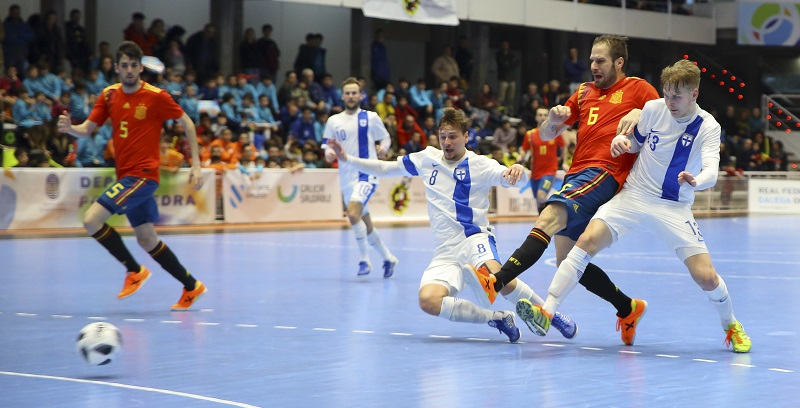

Futsal oynanış bakımından futbol, hentbol ve basketbolu andıran bir spor. Yalnızca kalecilerin ellerini kullanabildiği sporda oyuncu değiştirme ile ilgili herhangi bir sınırlama bulunmaktadır. Takımlar, sınırsız sayıda oyuncu değişikliği yapabiliyor. Oyundan çıkan oyuncu, yeniden oyuna girebiliyor.
Futsal saha ölçüleri konusunda farklı alternatiflere sahip. Belirlenmiş net bir saha ölçüsü yerine en az ve en fazla aralıkları verilerek standarta yakın bir sistem belirlenmiş. Uluslararası maçlarda sahanın boyu en az 38 metre, en fazla 41 metre; eni ise en az 18 metre, en fazla 25 metre olarak belirlenmiştir. Futsal kale ölçüleri ise 3 metre genişlik ve 2 metre yüksekliğe sahip. Futsal kalesinde derinlik ise en 80 santimetre olmalı. Penaltı noktası ise kaleden 6 metre uzaktadır. Her iki kalenin etrafında, futboldaki gibi bir ceza sahası bulunmaktadır.

Futsalda bir baş hakem olmak üzere dört hakem bulunur. Futsal hakemleri arasında baş hakemin, diğer hakemlerin verdiği kararı geçersiz kılması şeklinde bir hiyerarşi bulunuyor. Hakemler; baş hakem, ikinci hakem, süre hakemi ve üçüncü hakem olarak görev dağılımı yaparlar.
Futsal kaç kişiyle oynanır sorusunun cevabı, bir kaleci, dört oyuncu olmak üzere beş kişidir. İki takımın da beşer kişiyle sahada olduğu maçta, 7’şer yedek oyuncu bulundurulabilir.
Futsal maçı süre olarak da oynanışı gibi hızlı sona eren bir spor. İki yarıdan oluşan futsalda devreler 20’şer dakikadan oynanır. Maç uzatmaya giderse 5’er dakikadan iki yarı daha oynanır.
Futbolun aksine, futsalda takımların mola hakları bulunur. Her yarıda birer mola hakkı bulunan takımlar, bu 1 dakikalık arada taktik değişikliği ve dinlenme ihtiyaçlarını giderirler.

Oyun içinde en fazla golü kaydeden takım kazanan takım olur. Beraberlik durumunda, turnuvanın kuralına göre ya müsabaka berabere biter ya da uzatma ve / veya seri penaltı atışlarına geçilir.
Temaslı ve şarjlı sporlardaki gibi fiziksel mücadeleye, belirli sınırlar içinde izin verilen futsalda da faul kavramı bulunmaktadır. Spor ahlakına uymayan müdaheleler, sert hamleler gibi çeşitli sebeplerden dolayı oyuncular aleyhine faul kararı çıkabilir. Faulun yapıldığı alana göre serbest vuruş veya penaltı kararı verilebilr.
Futsal topu, yaygın olan şekilde küre formatında bir toptur. Deri veya benzeri bir malzemeden yapılan topun çevresi 62 santimetre ile 64 santimetre aralığında olmalı.